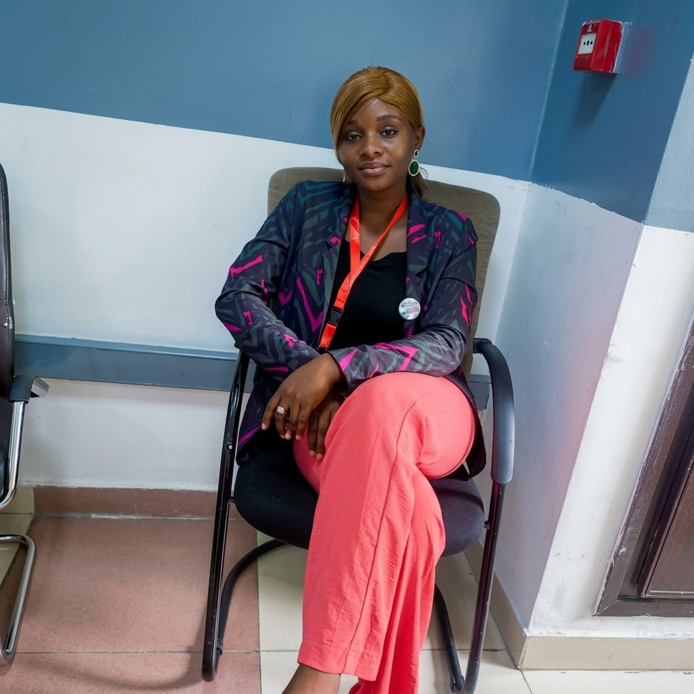

Data Science
Je conçois des modèles prédictifs et j'applique des méthodes statistiques rigoureuses pour transformer des données complexes en connaissance exploitable.
- Python
- Statistiques
- Scikit-learn
- Modèles prédictifs
Je transforme les données brutes en intelligence, les analyses en décisions, et les idées en solutions digitales.
De la collecte à la décision : je collecte, nettoie, analyse, modélise, visualise, développe et déploie des solutions Data & IA qui résolvent des problèmes concrets.
Je travaille sur toute la chaîne de la donnée : de la collecte brute jusqu'à la décision. Ce qui m'intéresse n'est pas la technique pour elle-même, mais ce qu'une organisation peut réellement faire de ses données une fois qu'elles sont propres, comprises et bien présentées.
Data Scientist congolaise basée à Brazzaville, formée en Data Science, passionnée par l'IA et la transformation numérique.
Je collecte, nettoie, analyse et modélise la donnée, puis je la restitue sous forme de dashboards ou d'applications utilisables au quotidien.
Comprendre le problème métier avant la technique. Une analyse qui ne change aucune décision n'a pas servi.
Je vais jusqu'au bout : je ne livre pas qu'un modèle ou qu'un rapport, je construis l'application qui le rend utilisable.

Sur le terrain — mission dataLicence en Data Science
Formation en statistiques et planification
Expérience en analyse et traitement des données
Expérience en digitalisation des processus
Développement d'applications web (Django)
Intelligence artificielle et Machine Learning
Six domaines complémentaires, de la donnée brute à l'application finale.
Je conçois des modèles prédictifs et j'applique des méthodes statistiques rigoureuses pour transformer des données complexes en connaissance exploitable.
Je nettoie, explore et structure des jeux de données bruts pour en extraire des insights fiables et directement actionnables.
Je construis des tableaux de bord décisionnels et des indicateurs clairs qui donnent aux équipes une lecture immédiate de leur activité.
Je développe des solutions de Machine Learning et de vision par ordinateur appliquées à des problématiques réelles, comme la détection médicale assistée par IA.
Je conçois des bases de données fiables et des pipelines de traitement qui alimentent proprement l'analyse et les modèles.
Je développe des applications web complètes, de l'architecture backend à l'interface, pour rendre la donnée utile au quotidien.
Quatre projets réels. Cliquez pour voir le problème, la méthode, les technologies et le résultat de chacun.
Les professionnels de santé perdent un temps considérable à retrouver, relire et recouper l'information dispersée dans des documents médicaux non structurés (comptes rendus, résultats, ordonnances), souvent en PDF ou en image scannée — au détriment du temps disponible pour le soin.
Documents médicaux importés par les utilisateurs, en environnement de démonstration avec des données entièrement fictives — aucune donnée patient réelle.
OCR (Tesseract, PyMuPDF) pour l'extraction de texte, puis extraction structurée et classification par IA via une abstraction multi-fournisseur (Claude / Gemini) — avec validation humaine obligatoire avant que toute information ne soit considérée comme fiable.
Plateforme complète avec contrôle d'accès par rôle (RBAC), workflow de validation humaine, journal d'audit, assistant IA conversationnel sur un dossier, recherche et génération de rapports PDF.
15 phases livrées de bout en bout (architecture → déploiement), projet conçu et développé en solo pour le Hackathon MISSIO 2026 — « Réinventer la santé avec l'IA ».
Code source privé — projet de hackathon, disponible sur demande.
Le dépistage précoce reste difficile d'accès dans de nombreux contextes. L'imagerie infrarouge est peu coûteuse et non invasive, mais son interprétation demande une expertise rare.
Jeu de données d'images infrarouges destinées à la classification.
Transfer learning sur l'architecture VGG16 : préparation des images, augmentation de données, entraînement et évaluation du modèle.
Modèle de classification d'images entraîné et évalué sur un jeu de test dédié.
Accuracy 97,66 %, precision 98,28 %, recall 96,61 %, F1-score 97,44 %. Projet lauréat du Prix de l'innovation « Denis Sassou Nguesso ».
Les dossiers et activités administratives de la Direction des Études et de la Planification (Cabinet ZLECAf) étaient suivis de façon fragmentée, sans centralisation ni visibilité d'ensemble.
Dossiers et activités administratives de la direction, liés aux travaux sur la Zone de libre-échange continentale africaine (ZLECAf).
Conception et développement d'une application web interne : authentification sécurisée, centralisation des dossiers, tableau de bord de suivi.
Plateforme interne permettant à la direction de centraliser, suivre et piloter ses dossiers administratifs depuis un accès sécurisé.
Application déployée et utilisée en conditions réelles au sein du Cabinet.
Authentification sécurisée des agents
Centralisation des dossiers administratifs
Suivi de l'avancement de chaque dossier
Tableau de bord d'activité de la direction
L'entreprise avait besoin d'un site web professionnel reflétant fidèlement ses activités et son identité de marque, à partir de ses documents officiels.
Documents officiels de l'entreprise : présentation, offres, logo et charte graphique.
Refonte complète en 5 pages (Accueil, À propos, Activités, Offres, Contact), identité visuelle bleu marine/or dérivée du logo, formulaire de contact fonctionnel, SEO technique et vérification responsive complète.
Site institutionnel complet, avec formulaire de contact par e-mail, sitemap, robots.txt et données structurées Schema.org.
Site en production, structuré autour des quatre activités de l'entreprise.
Collecter → Nettoyer → Analyser → Modéliser → Visualiser → Développer → Déployer → Transformer la donnée en décision.
Identifier les sources disponibles, leur fiabilité et leurs limites.
Traiter les valeurs manquantes, doublons et incohérences — l'étape la plus déterminante.
Explorer et tester ce que les données permettent réellement d'affirmer.
Machine learning quand la prédiction apporte une valeur réelle.
Le bon graphique pour la bonne question, lisible en trente secondes.
Construire l'application qui rend l'analyse utilisable au quotidien.
Mettre la solution en production, entre les mains des utilisateurs.
Une recommandation claire, en langage métier, avec ses limites.
Des compétences vérifiées, au-delà du diplôme.
L'Afrique possède une immense richesse de données. L'enjeu est de transformer ces données en intelligence, en innovation et en décisions utiles.
Les données produites chaque jour par les administrations, les entreprises et les services publics restent souvent inexploitées, faute d'outils et de compétences locales pour les valoriser. C'est précisément le travail que je veux faire : rendre ces données lisibles, fiables et actionnables, là où elles sont produites.
Exploration, statistiques descriptives et inférentielles, réponse à une question métier précise.
Modèles de classification, de prédiction et de vision par ordinateur, du prototype à l'évaluation.
Définition des KPI, modélisation et tableaux de bord Power BI pour le pilotage.
Scripts d'automatisation, traitement de données, API et outils internes.
Applications web métier : saisie, workflow, suivi et restitution.
Conception de schémas, requêtes SQL, qualité et intégrité des données.
Graphiques et interfaces lisibles, pensés pour la décision et non pour l'effet.
Dématérialisation de procédures, centralisation et automatisation des étapes.
Conception d'enquêtes, échantillonnage, traitement et rédaction des résultats.
Le détail de ma formation, de mes expériences et de mes compétences, en une page à emporter.
Vous avez un projet Data, une problématique métier ou une idée que vous souhaitez transformer en solution numérique ? Écrivez-moi, je réponds à chaque message.